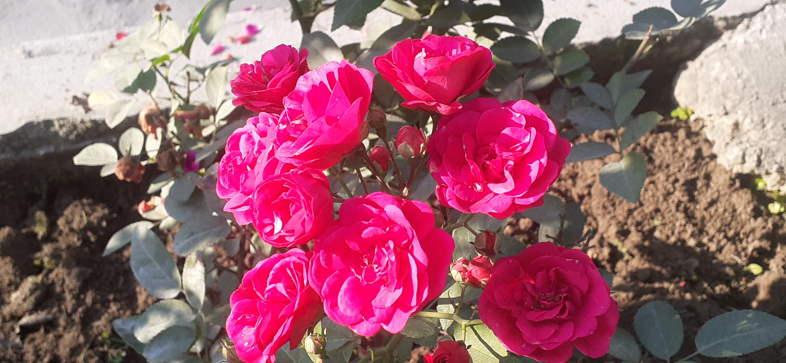

|  |
RED HOT POKER !!!!!!THIS PIC IS OF RED HOT POKER ROSE .THIS PICTURE IS CLICKED BY MR.AARYAN SINGH SACHAN. Red Hot Poker, also known as Torch Lilies are named because of their bright orange blooms that grow on top of a long, slender stem giving the appearance of a poker or torch. THIS IS A BEAUTIFUL FLOWER WHICH IS A SPECIES OF ROSE . THE SMELL OF THIS FLOWER LINGERED ALL OVER THE PARK.IT IS COMMONLY FOUND IN NEPAL. |